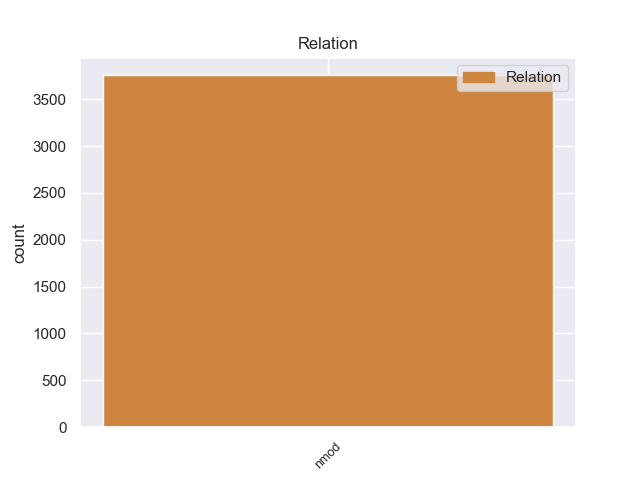
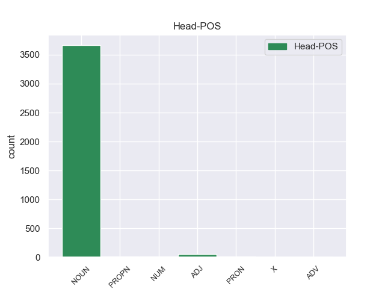
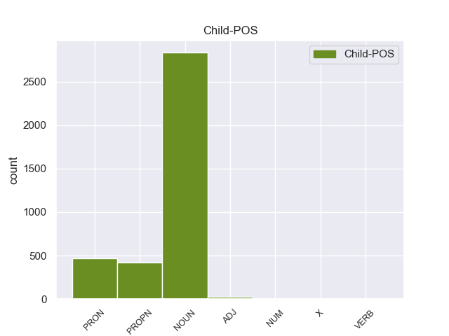

Distribution of features within this leaf



Agreement Rules sorted by frequency.
- When the dependent token is the nominal modifier(nmod) of the head token, and the dependent token is NOUN.
1 Ευελπιστώ _ _ _ _ 0 _ _ _
2 ότι _ _ _ _ 0 _ _ _
3 η _ _ _ _ 0 _ _ _
4 απόφαση απόφαση NOUN _ Case=Nom|Gender=Fem|Number=Sing 0 _ _ _
5 αυτή _ _ _ _ 0 _ _ _
6 , _ _ _ _ 0 _ _ _
7 συμπεριλαμβανομένης _ _ _ _ 0 _ _ _
8 και _ _ _ _ 0 _ _ _
9 της _ _ _ _ 0 _ _ _
10 αιτιολογικής _ _ _ _ 0 _ _ _
11 έκθεσης έκθεση NOUN _ Case=Gen|Gender=Fem|Number=Sing 4 nmod _ _
12 που _ _ _ _ 0 _ _ _
13 την _ _ _ _ 0 _ _ _
14 συνοδεύει _ _ _ _ 0 _ _ _
15 , _ _ _ _ 0 _ _ _
16 θα _ _ _ _ 0 _ _ _
17 διαβιβαστεί _ _ _ _ 0 _ _ _
18 σ _ _ _ _ 0 _ _ _
19 τις _ _ _ _ 0 _ _ _
20 γαλλικές _ _ _ _ 0 _ _ _
21 αρχές _ _ _ _ 0 _ _ _
22 , _ _ _ _ 0 _ _ _
23 εφόσον _ _ _ _ 0 _ _ _
24 υπερψηφιστεί _ _ _ _ 0 _ _ _
25 από _ _ _ _ 0 _ _ _
26 το _ _ _ _ 0 _ _ _
27 Κοινοβούλιο _ _ _ _ 0 _ _ _
28 . _ _ _ _ 0 _ _ _
1 Ωστόσο _ _ _ _ 0 _ _ _
2 , _ _ _ _ 0 _ _ _
3 ο _ _ _ _ 0 _ _ _
4 Εισαγγελέας εισαγγελέας NOUN _ Case=Nom|Gender=Masc|Number=Sing 0 _ _ _
5 Εφετών εφέτης PROPN _ Case=Gen|Gender=Masc|Number=Plur 4 nmod _ _
6 θεώρησε _ _ _ _ 0 _ _ _
7 ότι _ _ _ _ 0 _ _ _
8 , _ _ _ _ 0 _ _ _
9 και _ _ _ _ 0 _ _ _
10 εδώ _ _ _ _ 0 _ _ _
11 παραθέτω _ _ _ _ 0 _ _ _
12 κατά _ _ _ _ 0 _ _ _
13 λέξη _ _ _ _ 0 _ _ _
14 , _ _ _ _ 0 _ _ _
15 " _ _ _ _ 0 _ _ _
16 αντίθετα _ _ _ _ 0 _ _ _
17 με _ _ _ _ 0 _ _ _
18 την _ _ _ _ 0 _ _ _
19 εκτίμηση _ _ _ _ 0 _ _ _
20 του _ _ _ _ 0 _ _ _
21 άλλου _ _ _ _ 0 _ _ _
22 Εισαγγελέα _ _ _ _ 0 _ _ _
23 , _ _ _ _ 0 _ _ _
24 η _ _ _ _ 0 _ _ _
25 παρούσα _ _ _ _ 0 _ _ _
26 αίτηση _ _ _ _ 0 _ _ _
27 άρσης _ _ _ _ 0 _ _ _
28 της _ _ _ _ 0 _ _ _
29 ασυλίας _ _ _ _ 0 _ _ _
30 δικαιολογεί _ _ _ _ 0 _ _ _
31 επιφυλάξεις _ _ _ _ 0 _ _ _
32 " _ _ _ _ 0 _ _ _
33 . _ _ _ _ 0 _ _ _
1 Σ _ _ _ _ 0 _ _ _
2 την _ _ _ _ 0 _ _ _
3 παρούσα _ _ _ _ 0 _ _ _
4 μορφή μορφή NOUN _ Case=Acc|Gender=Fem|Number=Sing 0 _ _ _
5 της μου PRON _ Case=Gen|Gender=Fem|Number=Sing|Person=3|Poss=Yes|PronType=Prs 4 nmod _ _
6 , _ _ _ _ 0 _ _ _
7 η _ _ _ _ 0 _ _ _
8 αίτηση _ _ _ _ 0 _ _ _
9 άρσης _ _ _ _ 0 _ _ _
10 της _ _ _ _ 0 _ _ _
11 ασυλίας _ _ _ _ 0 _ _ _
12 παρουσιάζεται _ _ _ _ 0 _ _ _
13 απαράδεκτα _ _ _ _ 0 _ _ _
14 ασαφής _ _ _ _ 0 _ _ _
15 . _ _ _ _ 0 _ _ _
1 Τα _ _ _ _ 0 _ _ _
2 Σύβοτα _ _ _ _ 0 _ _ _
3 είναι _ _ _ _ 0 _ _ _
4 ένας _ _ _ _ 0 _ _ _
5 παραθαλάσσιος _ _ _ _ 0 _ _ _
6 οικισμός _ _ _ _ 0 _ _ _
7 σ _ _ _ _ 0 _ _ _
8 το _ _ _ _ 0 _ _ _
9 νότιο _ _ _ _ 0 _ _ _
10 άκρο άκρο NOUN _ Case=Acc|Gender=Neut|Number=Sing 0 _ _ _
11 του _ _ _ _ 0 _ _ _
12 Ν. ός ADJ _ Case=Gen|Gender=Neut|Number=Sing 10 nmod _ _
13 Θεσπρωτίας _ _ _ _ 0 _ _ _
14 χτισμένα _ _ _ _ 0 _ _ _
15 σε _ _ _ _ 0 _ _ _
16 έναν _ _ _ _ 0 _ _ _
17 μικρό _ _ _ _ 0 _ _ _
18 , _ _ _ _ 0 _ _ _
19 κλειστό _ _ _ _ 0 _ _ _
20 κόλπο _ _ _ _ 0 _ _ _
21 . _ _ _ _ 0 _ _ _
1 Υπάρχει _ _ _ _ 0 _ _ _
2 μια _ _ _ _ 0 _ _ _
3 χρυσή _ _ _ _ 0 _ _ _
4 τομή _ _ _ _ 0 _ _ _
5 και _ _ _ _ 0 _ _ _
6 μια _ _ _ _ 0 _ _ _
7 ισορροπία ισορροπία NOUN NOUN Case=Nom|Gender=Fem|Number=Sing 0 _ _ _
8 μεταξύ _ _ _ _ 0 _ _ _
9 των _ _ _ _ 0 _ _ _
10 δύο δύο NUM NUM Case=Gen|Gender=Fem|Number=Plur|NumType=Card 7 nmod _ SpaceAfter=No
11 , _ _ _ _ 0 _ _ _
12 η _ _ _ _ 0 _ _ _
13 οποία _ _ _ _ 0 _ _ _
14 πρέπει _ _ _ _ 0 _ _ _
15 να _ _ _ _ 0 _ _ _
16 διατηρηθεί _ _ _ _ 0 _ _ _
17 . _ _ _ _ 0 _ _ _
1 Δεν _ _ _ _ 0 _ _ _
2 πρέπει _ _ _ _ 0 _ _ _
3 να _ _ _ _ 0 _ _ _
4 υποτιμούμε _ _ _ _ 0 _ _ _
5 τους _ _ _ _ 0 _ _ _
6 κινδύνους _ _ _ _ 0 _ _ _
7 που _ _ _ _ 0 _ _ _
8 δημιούργησε _ _ _ _ 0 _ _ _
9 η _ _ _ _ 0 _ _ _
10 συγκεκριμένη _ _ _ _ 0 _ _ _
11 ενέργεια _ _ _ _ 0 _ _ _
12 , _ _ _ _ 0 _ _ _
13 καθώς _ _ _ _ 0 _ _ _
14 , _ _ _ _ 0 _ _ _
15 εάν _ _ _ _ 0 _ _ _
16 είχε _ _ _ _ 0 _ _ _
17 επιτύχει _ _ _ _ 0 _ _ _
18 τον _ _ _ _ 0 _ _ _
19 στόχο _ _ _ _ 0 _ _ _
20 της _ _ _ _ 0 _ _ _
21 δολοφονίας _ _ _ _ 0 _ _ _
22 των _ _ _ _ 0 _ _ _
23 υπουργών _ _ _ _ 0 _ _ _
24 της _ _ _ _ 0 _ _ _
25 κυβέρνησης _ _ _ _ 0 _ _ _
26 και _ _ _ _ 0 _ _ _
27 των _ _ _ _ 0 _ _ _
28 ηγετών _ _ _ _ 0 _ _ _
29 της _ _ _ _ 0 _ _ _
30 αντιπολίτευσης _ _ _ _ 0 _ _ _
31 που _ _ _ _ 0 _ _ _
32 ήταν _ _ _ _ 0 _ _ _
33 παρόντες _ _ _ _ 0 _ _ _
34 σ _ _ _ _ 0 _ _ _
35 τον _ _ _ _ 0 _ _ _
36 χώρο _ _ _ _ 0 _ _ _
37 , _ _ _ _ 0 _ _ _
38 θα _ _ _ _ 0 _ _ _
39 είχε _ _ _ _ 0 _ _ _
40 σημάνει _ _ _ _ 0 _ _ _
41 την _ _ _ _ 0 _ _ _
42 έναρξη _ _ _ _ 0 _ _ _
43 πολέμου πόλεμος NOUN _ Case=Gen|Gender=Masc|Number=Sing 0 _ _ _
44 μεταξύ _ _ _ _ 0 _ _ _
45 της _ _ _ _ 0 _ _ _
46 Ινδίας _ _ _ _ 0 _ _ _
47 και _ _ _ _ 0 _ _ _
48 του _ _ _ _ 0 _ _ _
49 Πακιστάν Πακιστάν X _ Case=Gen|Gender=Masc|Number=Sing 43 nmod _ _
50 , _ _ _ _ 0 _ _ _
51 χωρών _ _ _ _ 0 _ _ _
52 που _ _ _ _ 0 _ _ _
53 είναι _ _ _ _ 0 _ _ _
54 και _ _ _ _ 0 _ _ _
55 οι _ _ _ _ 0 _ _ _
56 δυο _ _ _ _ 0 _ _ _
57 πυρηνικές _ _ _ _ 0 _ _ _
58 δυνάμεις _ _ _ _ 0 _ _ _
59 και _ _ _ _ 0 _ _ _
60 διαθέτουν _ _ _ _ 0 _ _ _
61 , _ _ _ _ 0 _ _ _
62 επίσης _ _ _ _ 0 _ _ _
63 , _ _ _ _ 0 _ _ _
64 τεράστιες _ _ _ _ 0 _ _ _
65 συμβατικές _ _ _ _ 0 _ _ _
66 χερσαίες _ _ _ _ 0 _ _ _
67 δυνάμεις _ _ _ _ 0 _ _ _
68 - _ _ _ _ 0 _ _ _
69 αν _ _ _ _ 0 _ _ _
70 και _ _ _ _ 0 _ _ _
71 η _ _ _ _ 0 _ _ _
72 Ινδία _ _ _ _ 0 _ _ _
73 έχει _ _ _ _ 0 _ _ _
74 τουλάχιστον _ _ _ _ 0 _ _ _
75 διακηρύξει _ _ _ _ 0 _ _ _
76 πολιτική _ _ _ _ 0 _ _ _
77 μη _ _ _ _ 0 _ _ _
78 πρώτης _ _ _ _ 0 _ _ _
79 χρήσης _ _ _ _ 0 _ _ _
80 του _ _ _ _ 0 _ _ _
81 πυρηνικού _ _ _ _ 0 _ _ _
82 της _ _ _ _ 0 _ _ _
83 οπλοστασίου _ _ _ _ 0 _ _ _
84 , _ _ _ _ 0 _ _ _
85 αντίθετα _ _ _ _ 0 _ _ _
86 από _ _ _ _ 0 _ _ _
87 το _ _ _ _ 0 _ _ _
88 Πακιστάν _ _ _ _ 0 _ _ _
89 . _ _ _ _ 0 _ _ _
1 Η _ _ _ _ 0 _ _ _
2 Τζορτζέτ _ _ _ _ 0 _ _ _
3 Γκανόν _ _ _ _ 0 _ _ _
4 πρόσθεσε _ _ _ _ 0 _ _ _
5 ότι _ _ _ _ 0 _ _ _
6 « _ _ _ _ 0 _ _ _
7 η _ _ _ _ 0 _ _ _
8 διασφάλιση _ _ _ _ 0 _ _ _
9 των _ _ _ _ 0 _ _ _
10 δικαιωμάτων _ _ _ _ 0 _ _ _
11 των _ _ _ _ 0 _ _ _
12 γυναικών _ _ _ _ 0 _ _ _
13 , _ _ _ _ 0 _ _ _
14 όπως _ _ _ _ 0 _ _ _
15 η _ _ _ _ 0 _ _ _
16 συμμετοχή συμμετοχή NOUN _ Case=Nom|Gender=Fem|Number=Sing 0 _ _ _
17 τους _ _ _ _ 0 _ _ _
18 σ _ _ _ _ 0 _ _ _
19 τα _ _ _ _ 0 _ _ _
20 κοινά _ _ _ _ 0 _ _ _
21 , _ _ _ _ 0 _ _ _
22 συμπεριλαμβανομένης συμπεριλαμβανομένη VERB _ Case=Gen|Gender=Fem|Number=Sing 16 nmod _ _
23 και _ _ _ _ 0 _ _ _
24 της _ _ _ _ 0 _ _ _
25 συμμετοχής _ _ _ _ 0 _ _ _
26 τους _ _ _ _ 0 _ _ _
27 σ _ _ _ _ 0 _ _ _
28 την _ _ _ _ 0 _ _ _
29 διαδικασία _ _ _ _ 0 _ _ _
30 ειρήνης _ _ _ _ 0 _ _ _
31 και _ _ _ _ 0 _ _ _
32 συμφιλίωσης _ _ _ _ 0 _ _ _
33 και _ _ _ _ 0 _ _ _
34 σ _ _ _ _ 0 _ _ _
35 τις _ _ _ _ 0 _ _ _
36 ίσες _ _ _ _ 0 _ _ _
37 ευκαιρίες _ _ _ _ 0 _ _ _
38 σ _ _ _ _ 0 _ _ _
39 την _ _ _ _ 0 _ _ _
40 εκπαίδευση _ _ _ _ 0 _ _ _
41 και _ _ _ _ 0 _ _ _
42 την _ _ _ _ 0 _ _ _
43 εργασία _ _ _ _ 0 _ _ _
44 , _ _ _ _ 0 _ _ _
45 προϋποθέτει _ _ _ _ 0 _ _ _
46 όχι _ _ _ _ 0 _ _ _
47 μόνο _ _ _ _ 0 _ _ _
48 γραπτές _ _ _ _ 0 _ _ _
49 νομικές _ _ _ _ 0 _ _ _
50 εγγυήσεις _ _ _ _ 0 _ _ _
51 , _ _ _ _ 0 _ _ _
52 αλλά _ _ _ _ 0 _ _ _
53 και _ _ _ _ 0 _ _ _
54 την _ _ _ _ 0 _ _ _
55 άμεση _ _ _ _ 0 _ _ _
56 εφαρμογή _ _ _ _ 0 _ _ _
57 του _ _ _ _ 0 _ _ _
58 νόμου _ _ _ _ 0 _ _ _
59 » _ _ _ _ 0 _ _ _
60 . _ _ _ _ 0 _ _ _
Disagree Examples:
1 σε _ _ _ _ 0 _ _ _
2 άλλες _ _ _ _ 0 _ _ _
3 πλευρές _ _ _ _ 0 _ _ _
4 ο _ _ _ _ 0 _ _ _
5 ποταμός _ _ _ _ 0 _ _ _
6 κυλά _ _ _ _ 0 _ _ _
7 από _ _ _ _ 0 _ _ _
8 ψηλούς _ _ _ _ 0 _ _ _
9 βράχους _ _ _ _ 0 _ _ _
10 - _ _ _ _ 0 _ _ _
11 μερικές _ _ _ _ 0 _ _ _
12 φορές _ _ _ _ 0 _ _ _
13 φτάνει _ _ _ _ 0 _ _ _
14 τα _ _ _ _ 0 _ _ _
15 εκατό _ _ _ _ 0 _ _ _
16 μέτρα _ _ _ _ 0 _ _ _
17 - _ _ _ _ 0 _ _ _
18 και _ _ _ _ 0 _ _ _
19 το _ _ _ _ 0 _ _ _
20 πλάτος πλάτος NOUN NOUN Case=Nom|Gender=Neut|Number=Sing 0 _ _ _
21 του μου PRON PRON Case=Gen|Gender=Masc|Number=Sing|Person=3|Poss=Yes|PronType=Prs 20 nmod _ _
22 φτάνει _ _ _ _ 0 _ _ _
23 τα _ _ _ _ 0 _ _ _
24 δύο _ _ _ _ 0 _ _ _
25 μέτρα _ _ _ _ 0 _ _ _
26 . _ _ _ _ 0 _ _ _
1 Η _ _ _ _ 0 _ _ _
2 σημαντικότητα σημαντικότητα NOUN NOUN Case=Nom|Gender=Fem|Number=Sing 0 _ _ _
3 του _ _ _ _ 0 _ _ _
4 Αχέροντα Αχέροντας PROPN PROPN Case=Gen|Gender=Masc|Number=Sing 2 nmod _ _
5 ήταν _ _ _ _ 0 _ _ _
6 μεγάλη _ _ _ _ 0 _ _ _
7 κατά _ _ _ _ 0 _ _ _
8 την _ _ _ _ 0 _ _ _
9 αρχαιότητα _ _ _ _ 0 _ _ _
10 , _ _ _ _ 0 _ _ _
11 οπότε _ _ _ _ 0 _ _ _
12 και _ _ _ _ 0 _ _ _
13 ιδρύθηκε _ _ _ _ 0 _ _ _
14 σ _ _ _ _ 0 _ _ _
15 την _ _ _ _ 0 _ _ _
16 βορειοανατολική _ _ _ _ 0 _ _ _
17 όχθη _ _ _ _ 0 _ _ _
18 της _ _ _ _ 0 _ _ _
19 Αχερουσίας _ _ _ _ 0 _ _ _
20 το _ _ _ _ 0 _ _ _
21 Νεκρομαντείο _ _ _ _ 0 _ _ _
22 , _ _ _ _ 0 _ _ _
23 ο _ _ _ _ 0 _ _ _
24 σημαντικότερος _ _ _ _ 0 _ _ _
25 τόπος _ _ _ _ 0 _ _ _
26 επικοινωνίας _ _ _ _ 0 _ _ _
27 με _ _ _ _ 0 _ _ _
28 τους _ _ _ _ 0 _ _ _
29 νεκρούς _ _ _ _ 0 _ _ _
30 και _ _ _ _ 0 _ _ _
31 λατρείας _ _ _ _ 0 _ _ _
32 των _ _ _ _ 0 _ _ _
33 θεών _ _ _ _ 0 _ _ _
34 του _ _ _ _ 0 _ _ _
35 Κάτω _ _ _ _ 0 _ _ _
36 Κόσμου _ _ _ _ 0 _ _ _
37 . _ _ _ _ 0 _ _ _
1 Η _ _ _ _ 0 _ _ _
2 σημαντικότητα _ _ _ _ 0 _ _ _
3 του _ _ _ _ 0 _ _ _
4 Αχέροντα _ _ _ _ 0 _ _ _
5 ήταν _ _ _ _ 0 _ _ _
6 μεγάλη _ _ _ _ 0 _ _ _
7 κατά _ _ _ _ 0 _ _ _
8 την _ _ _ _ 0 _ _ _
9 αρχαιότητα _ _ _ _ 0 _ _ _
10 , _ _ _ _ 0 _ _ _
11 οπότε _ _ _ _ 0 _ _ _
12 και _ _ _ _ 0 _ _ _
13 ιδρύθηκε _ _ _ _ 0 _ _ _
14 σ _ _ _ _ 0 _ _ _
15 την _ _ _ _ 0 _ _ _
16 βορειοανατολική _ _ _ _ 0 _ _ _
17 όχθη _ _ _ _ 0 _ _ _
18 της _ _ _ _ 0 _ _ _
19 Αχερουσίας _ _ _ _ 0 _ _ _
20 το _ _ _ _ 0 _ _ _
21 Νεκρομαντείο _ _ _ _ 0 _ _ _
22 , _ _ _ _ 0 _ _ _
23 ο _ _ _ _ 0 _ _ _
24 σημαντικότερος _ _ _ _ 0 _ _ _
25 τόπος τόπος NOUN NOUN Case=Nom|Gender=Masc|Number=Sing 0 _ _ _
26 επικοινωνίας επικοινωνία NOUN NOUN Case=Gen|Gender=Fem|Number=Sing 25 nmod _ _
27 με _ _ _ _ 0 _ _ _
28 τους _ _ _ _ 0 _ _ _
29 νεκρούς _ _ _ _ 0 _ _ _
30 και _ _ _ _ 0 _ _ _
31 λατρείας _ _ _ _ 0 _ _ _
32 των _ _ _ _ 0 _ _ _
33 θεών _ _ _ _ 0 _ _ _
34 του _ _ _ _ 0 _ _ _
35 Κάτω _ _ _ _ 0 _ _ _
36 Κόσμου _ _ _ _ 0 _ _ _
37 . _ _ _ _ 0 _ _ _
1 Η _ _ _ _ 0 _ _ _
2 σημαντικότητα _ _ _ _ 0 _ _ _
3 του _ _ _ _ 0 _ _ _
4 Αχέροντα _ _ _ _ 0 _ _ _
5 ήταν _ _ _ _ 0 _ _ _
6 μεγάλη _ _ _ _ 0 _ _ _
7 κατά _ _ _ _ 0 _ _ _
8 την _ _ _ _ 0 _ _ _
9 αρχαιότητα _ _ _ _ 0 _ _ _
10 , _ _ _ _ 0 _ _ _
11 οπότε _ _ _ _ 0 _ _ _
12 και _ _ _ _ 0 _ _ _
13 ιδρύθηκε _ _ _ _ 0 _ _ _
14 σ _ _ _ _ 0 _ _ _
15 την _ _ _ _ 0 _ _ _
16 βορειοανατολική _ _ _ _ 0 _ _ _
17 όχθη _ _ _ _ 0 _ _ _
18 της _ _ _ _ 0 _ _ _
19 Αχερουσίας _ _ _ _ 0 _ _ _
20 το _ _ _ _ 0 _ _ _
21 Νεκρομαντείο _ _ _ _ 0 _ _ _
22 , _ _ _ _ 0 _ _ _
23 ο _ _ _ _ 0 _ _ _
24 σημαντικότερος _ _ _ _ 0 _ _ _
25 τόπος _ _ _ _ 0 _ _ _
26 επικοινωνίας επικοινωνία NOUN NOUN Case=Gen|Gender=Fem|Number=Sing 0 _ _ _
27 με _ _ _ _ 0 _ _ _
28 τους _ _ _ _ 0 _ _ _
29 νεκρούς νεκρός NOUN NOUN Case=Acc|Gender=Masc|Number=Sing 26 nmod _ _
30 και _ _ _ _ 0 _ _ _
31 λατρείας _ _ _ _ 0 _ _ _
32 των _ _ _ _ 0 _ _ _
33 θεών _ _ _ _ 0 _ _ _
34 του _ _ _ _ 0 _ _ _
35 Κάτω _ _ _ _ 0 _ _ _
36 Κόσμου _ _ _ _ 0 _ _ _
37 . _ _ _ _ 0 _ _ _
1 Η _ _ _ _ 0 _ _ _
2 σημαντικότητα _ _ _ _ 0 _ _ _
3 του _ _ _ _ 0 _ _ _
4 Αχέροντα _ _ _ _ 0 _ _ _
5 ήταν _ _ _ _ 0 _ _ _
6 μεγάλη _ _ _ _ 0 _ _ _
7 κατά _ _ _ _ 0 _ _ _
8 την _ _ _ _ 0 _ _ _
9 αρχαιότητα _ _ _ _ 0 _ _ _
10 , _ _ _ _ 0 _ _ _
11 οπότε _ _ _ _ 0 _ _ _
12 και _ _ _ _ 0 _ _ _
13 ιδρύθηκε _ _ _ _ 0 _ _ _
14 σ _ _ _ _ 0 _ _ _
15 την _ _ _ _ 0 _ _ _
16 βορειοανατολική _ _ _ _ 0 _ _ _
17 όχθη _ _ _ _ 0 _ _ _
18 της _ _ _ _ 0 _ _ _
19 Αχερουσίας _ _ _ _ 0 _ _ _
20 το _ _ _ _ 0 _ _ _
21 Νεκρομαντείο _ _ _ _ 0 _ _ _
22 , _ _ _ _ 0 _ _ _
23 ο _ _ _ _ 0 _ _ _
24 σημαντικότερος _ _ _ _ 0 _ _ _
25 τόπος _ _ _ _ 0 _ _ _
26 επικοινωνίας _ _ _ _ 0 _ _ _
27 με _ _ _ _ 0 _ _ _
28 τους _ _ _ _ 0 _ _ _
29 νεκρούς _ _ _ _ 0 _ _ _
30 και _ _ _ _ 0 _ _ _
31 λατρείας λατρεία NOUN NOUN Case=Gen|Gender=Fem|Number=Sing 0 _ _ _
32 των _ _ _ _ 0 _ _ _
33 θεών θεός NOUN NOUN Case=Gen|Gender=Masc|Number=Plur 31 nmod _ _
34 του _ _ _ _ 0 _ _ _
35 Κάτω _ _ _ _ 0 _ _ _
36 Κόσμου _ _ _ _ 0 _ _ _
37 . _ _ _ _ 0 _ _ _